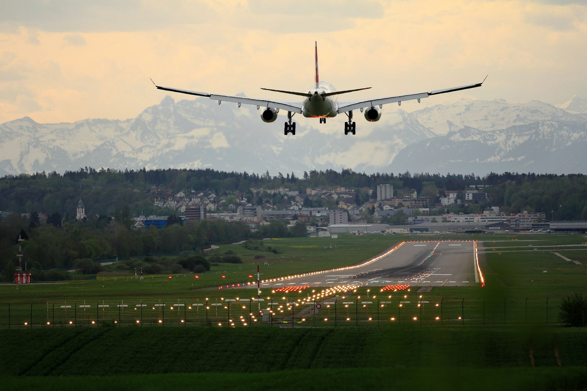
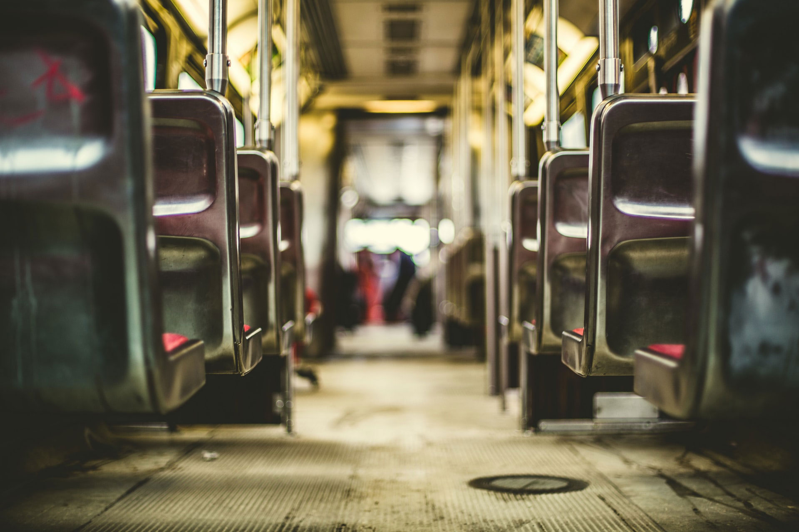
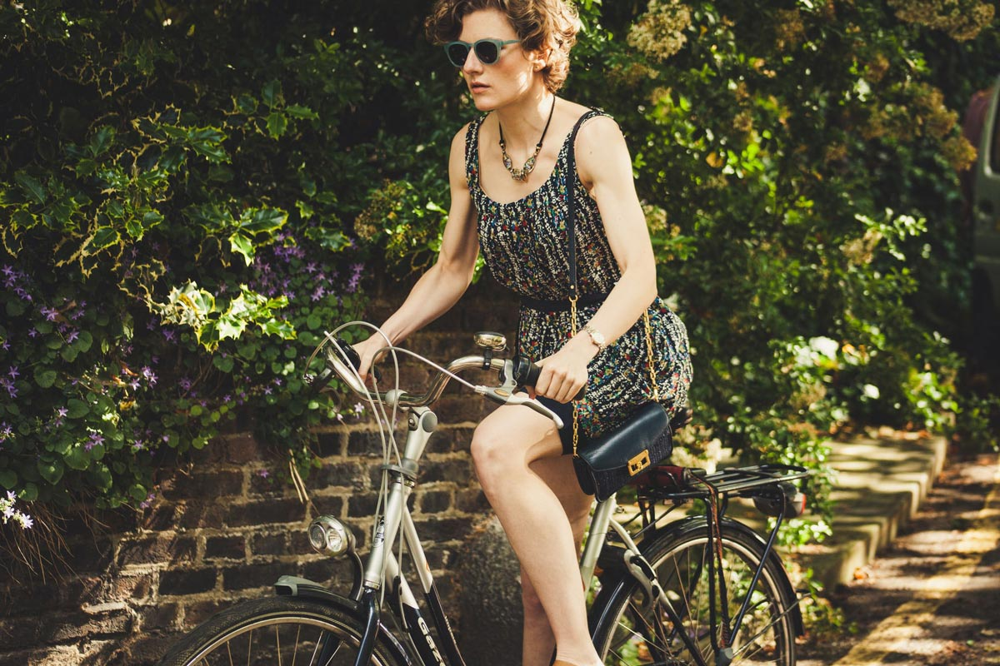

Driving large personal cars and short flights
Burning fossil fuels such as gas and oil used for various sources of transportation releases greenhouse gases into the Earth's atmosphere. The larger a transportation device, the greater the harmful emissions. Thus, taking short or unnecessary flights is a quick way to make a big difference, and not in a good way.
Public transportation
Choosing to take public transportation where available decreases an individual's carbon footprint, as the emission from the larger vehicle is averaged out by how many people are on it. There are not many public transportation options available in our community, but there are shuttles that take you to Walmart or the airport. Comparing the total emissions that each individual that could have taken a bus would accumulate from driving separately, it is clear that we can reduce our carbon footprint as we work together.
Bicycle use
Taking a road trip can create less emissions of greenhouse gases than an airplane flight would. Choosing to use public transportation can further reduce an individual's negative effect on the environment from modern transportation. One step further would be to walk or ride a bicycle on short distance trips that otherwise would have been driven. Cyclists do not add to the numerous greenhouse gases emitted by motorized transportation methods.
Even small decisions like choosing to ride your bike or walk a block instead of driving there can make a positive difference in the world!